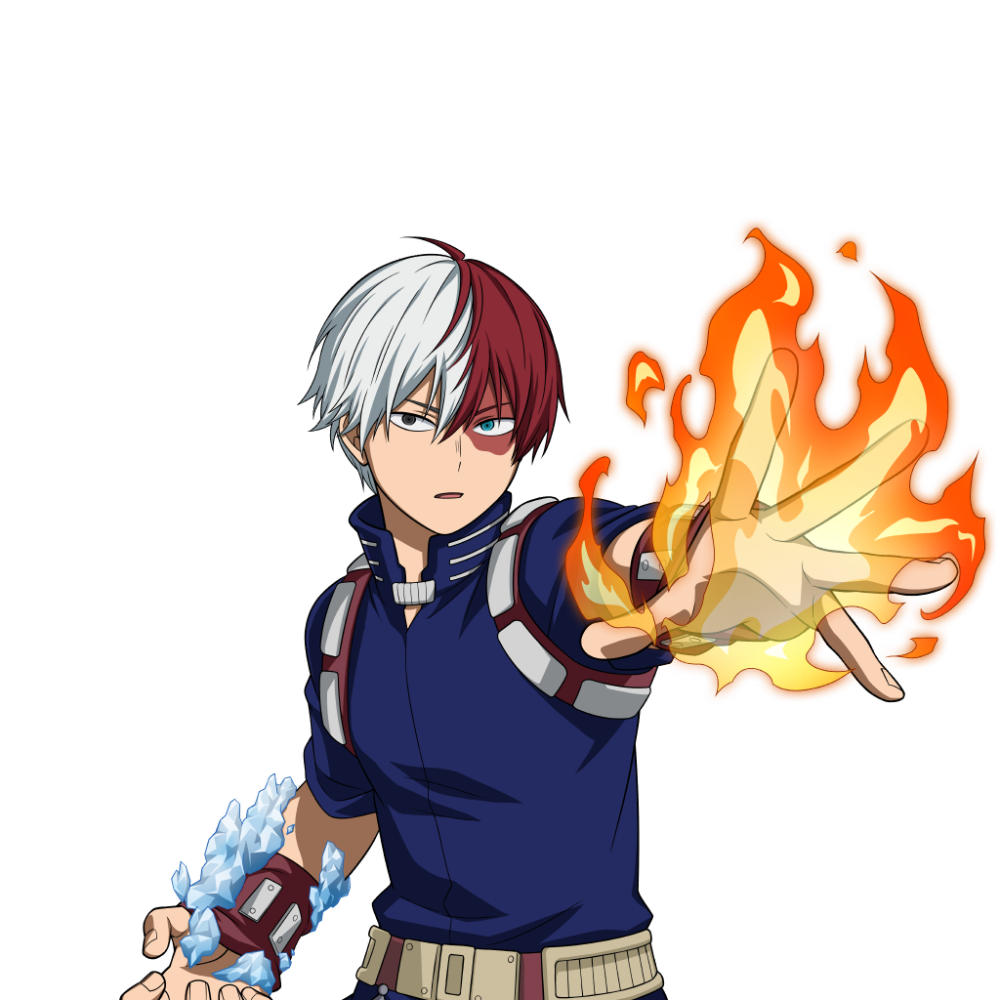

Shoto Todoroki
Nome de Herói: Shoto
Individualidade: Half-Cold Half-Hot – Consegue gerar gelo pelo lado esquerdo do corpo e chamas intensas pelo lado direito.
Perfil:
Inicialmente frio, distante e focado em rejeitar o lado de fogo por traumas familiares. Após aceitar seu poder, tornou-se um companheiro focado, incrivelmente forte, embora um pouco ingênuo socialmente.